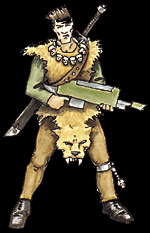

Imperial Forces |
Force Disposition Introduction |
Ork Forces |
|

+++ Date: 2388999/M41
+++ Ref: Arm/13337290/ELR
+++ By: Storm Trooper Captain Harkavian, 1st Black Guard Strike Force, Helsreach Hive
+++ To: General Kurov, Armageddon Command Guard, Infernus Hive
+++ Re: Asgardian reconnaissance of Helsreach
+++ Thought: A slave to the Throne is richer by far than a thousand renegades.
My Lord General,
My own forces are required here, at Helsreach, where Ork attacks are getting progressively stronger with each assault. I dare not weaken my line further. Helsreach itself could pay the price for that. As far as the Salamanders are concerned, their bravery and capability in fighting the greatest of enemies is legendary. However, I feel that the Asgardian Rangers have many advantages in their use throughout this warzone above and beyond Scouts of the Space Marines.
|
| ||||||||||||||||||||||||||||||||||||||||||||||||||
|
The tactical situation beyond the Hemlock Cordon is very fluid with Ork Speed Kults and marauding warbands to be found at every strategic point. We have witnessed the sheer speed of the Asgardian's biologically enhanced mounts, manipulatively bred for generations by Tech-Adepts. The mounts' incredible endurance and tenacity, coupled with their engineered resistance to wound and toxin can carry the Rangers through the worst of enemy held territory as they follow armies, staying out of the reach of opposing scouts and outriders. There are many within the militia who view the Asgardian Rangers as primitive, almost feral, and the Ranger's feudal background does little to alter this perception. However, I do not foresee victory within Helsreach for a considerable length of time and so the Asgardian's ability to stay in the field and subsist in the most desolate of areas will prove invaluable. Marine Scouts mounted on bikes will be constrained by the need for fuel, for resources are sparse in the Ash Wastes and they will also suffer in situations where stealth, rather than skill at arms, is required. In addition, the territory north of Helsreach and that surrounding the nearest Ork drop site is directly comparable to the terrain of the Ranger's own homeworld, thus granting the entire company a familiarity of surroundings that so many of our forces here lack. I have no wish to impugn the skills of the Adeptus Astartes. I pray to the Emperor that just one squad of their warriors could join us here in the defence of Helsreach, for they alone could turn the tide of battle. But in the duty of watching and recording Ork forces beyond the Hemlock Cordon, the Asgardian Rangers must be the clear choice. No other army on the planet has their skill or knowledge of reconnaissance within enemy held territory. I can assure you that all steps will be taken to avoid the Rangers engaging in direct battle and what few squads I have in the field beyond the Cordon will be ready to react to any sudden move by the Orks to hunt the Rangers down. Your Obied'nt Servant, Captain Harkavian
Though small in number, the Rangers of Asgard are currently providing a great deal of intelligence on the force distribution of the Orks. Despite their relatively recent appearance in the Imperial forces on Armageddon, many tactical catastrophes have been averted by the vigilance of these versatile troops. Under the guidance of General Odwin, the cavalry-based regiments are dispersed across the entirety of Armageddon Secundus. It is rare that these units are actually consigned to fight at the front line, but all reports correlated so far suggest the Asgardian rangers are fierce and able fighters, and their biologically enhanced steeds are as ferocious as their masters. | |||||||||||||||||||||||||||||||||||||||||||||||||||